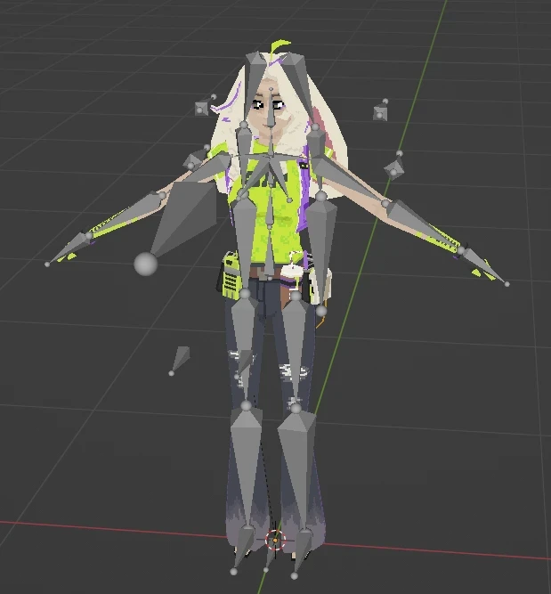
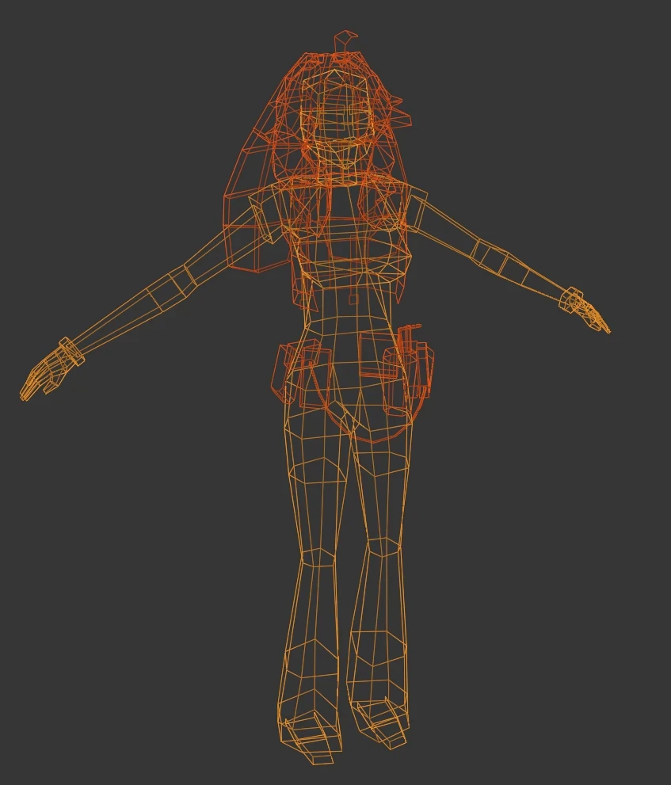
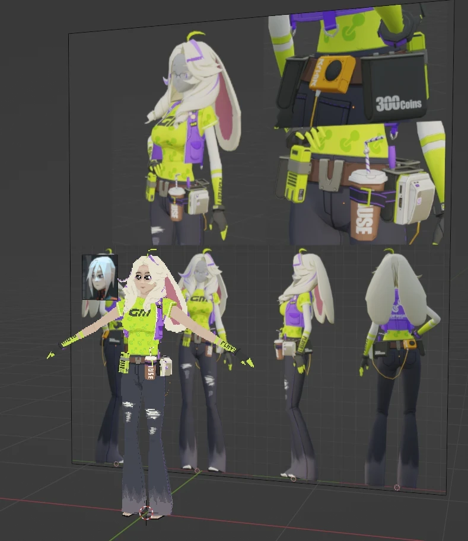
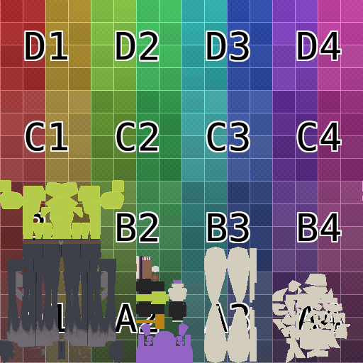
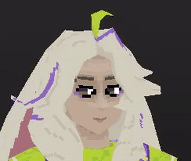
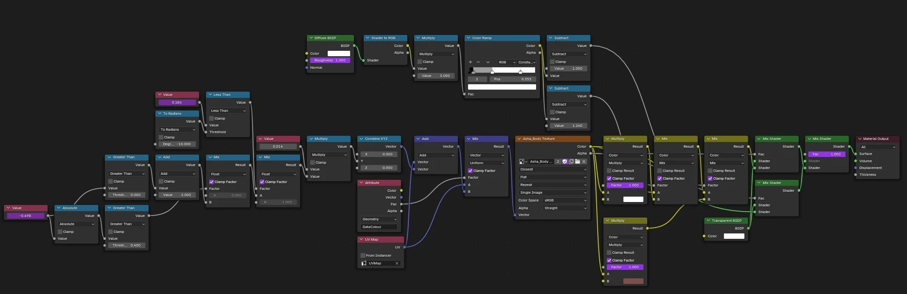

this project represents practice work for modelling, texturing, rigging, and animating! the character is based on Asha, an NPC from the game Zenless Zone Zero. the result is a game-ready character asset, in low-poly, pixel-art style.
 1601 triangles - 512x512 RGBA texture - 41 armature bones
to capture reference images, i used RenderDoc to frame-capture the game, then extracted Asha's models + textures and reconstructed them in blender. this itself was super interesting; i spent a long time looking at the individual steps the game uses to render the world and characters, and perform post-processing effects. i then used this model to capture 2D images from several angles, which i kept as reference for re-creating Asha from scratch.
when modelling, i avoided directly tracing, partly in order to properly practice freehand modelling skills, but also because the low-poly nature often conflicts with higher-poly references, and i needed to get creative in order to maintain key shapes and elements. i particularly enjoyed working on her belt gadgets! however, i found her hands and her hair especially difficult.
 Asha in front of the referencesthe hair was also a big problem when UV unwrapping the model. because very little of it forms nice, orthogonal quads, there's a lot of wasted space in the texture. since this is all pixel art that wasn't too much of a problem, but it did make texturing the hair hard. i arranged her as symmetrically as possible in the texture, as this made it easier to track what i was doing, although it did make my packing slightly less efficient. i also made the choice to keep different elements of her (body, jacket, hair, ears, face, gadgets) to their own sections of the texture, which also reduced my packing efficiency. however again, this isn't a huge problem when working with pixel art texturing.
the texturing was also quite challenging. i started by blocking out large scale colours, and i used blender's palette feature to keep track of my key colours. this helped me produce a nicely simplified colour palette, which matches her original in-game design and makes her visually clear. it also fits well with the low-poly pixel-art style in general. particularly challenging were the face and shirt: the former just due to not having much practice, and the latter due to the repeating pattern. although i experimented with using a stencil, i ended up texturing the shirt entirely by hand, in order to carefully space the pattern and give the impression of the shirt being stretched in some places.
i wanted the eyes to be dynamic, since this is a key way to make a face look alive. to do this, i painted 4 different textures for each eye: looking ahead, closed, looking left, looking right. then, using the vertex colours to isolate the triangles making up the eyes, i added a shader parameter which allowed me to select which eye textures were used. this allowed me to control where she was looking, and if she was blinking, which i think ends up looking really nice. i think the weakest area in terms of texturing is her hair. it was really hard to convey the sense of different strands with the low resolution and inconsistent texture flow, which is mostly a UV unwrapping issue.
during texturing i also added some missing bits of mesh - a straw for the drink on her belt, the green sprig in her hair, the orange cable between her belt gadgets, and the straps hanging from her jacket.
 incremental texturing progressafter texturing i did some rigging. her skeleton is quite simple, but it includes inverse kinematics for her legs (with knee pole targets), arms (with elbow pole targets), and ears (with middle-ear pole targets). the rigging could definitely be improved - there are no bones for controlling her fingers currently, and the volume preservation around her waist definitely struggles when her hips are bent more than 45 degrees or so. i'd also want to add some extra bones for controlling small details, like her jacket (and straps) and hair, in order to make her feel a bit more dynamic; i'd also like to improve the behaviour of her jacket and many of her joints as they often clip inside one another and generally behave weirdly. however, i am quite proud of a few small things i did with the rig. first of all, i added some corrective shape keys on the elbows. this was mostly an experiment, but it definitely helps to prevent self-intersection and weird looking artefacts when the elbows are bent. i also added a special bone parented to the head, which allows me to control the state of the eyes - moving the bone side to side controls whether the eyes look left, right, or straight; rotating the bone downwards causes her to blink. this makes it easy to animate her eyes with just the armature, and the material parameter controlling her eyes is linked via a pair of drivers.
 demo of Asha's movable eyesfinally, i made an animation to demonstrate her, which is shown in the first GIF on this project, and came up with a material. i stopped short of trying to create a walk cycle, but i may come back to that later.
Asha's material is essentially a simple toon shader, with some vertex colour masking and drivers connected to an armature bone for controlling the eye texture. a vertex warping/snapping effect is applied separately using geometry nodes, due to limitations of Blender's material nodes.
overall, i'm super proud of this project! it was definitely good practice all around, and i had a lot of fun bringing Asha to life in my style.